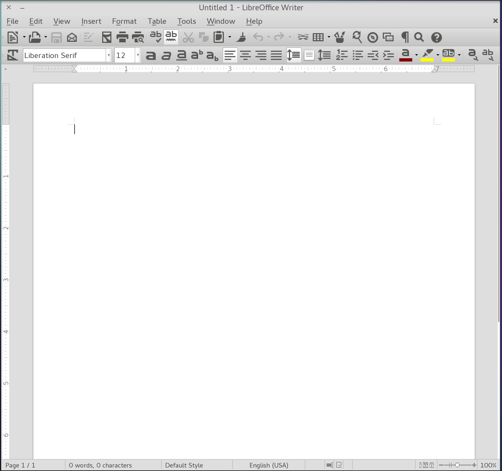

ElementaryGNOME is an Elementary-style GTK+ and GNOME-Shell theme. It brings Elementary/Mac OS X style to the GNOME3 desktop while still supporting the Elementary core apps. It consists of the Elementary GTK3 theme, the Elementary GTK2 theme, the Numix Frost Light metacity theme, and the MosLight GNOME-Shell theme. Each theme has been modified slightly to fit in with the Elementary color scheme but still work properly with GNOME.
Screenshots
Desktop
The GNOME Shell under ElementaryGNOME is beautiful.
App Picker
Even the app picker is perfect.
Files
The files app looks just like Pantheon files.
Text Editor
GEdit makes working with code a gorgeous experience.
LibreOffice Writer
Even GTK2 apps such as LibreOffice look nice.
Settings
ElementaryGNOME allows you to configure your system in style.
All Widgets
Every single toolkit widget in ElementaryGNOME is attractive and polished.
Are you convinced? It's time to download ElementaryGNOME!
Requirements
- Any GNOME-compatibile Linux distribution
- GNOME 3.12 or higher
- A theme-changing utility
Installation
ElementaryGNOME can be installed in the same way as other system themes:
- Download the ElementaryGNOME source files.
- Create the archive into
/usr/share/themes/. This requires root privileges. - Use a theme manager (such as GNOME Tweak Tool) to change the Window, GTK+, and Shell theme to "ElementaryGNOME".
Enjoy your stylish new desktop!